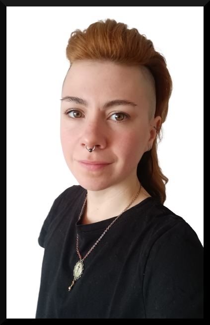
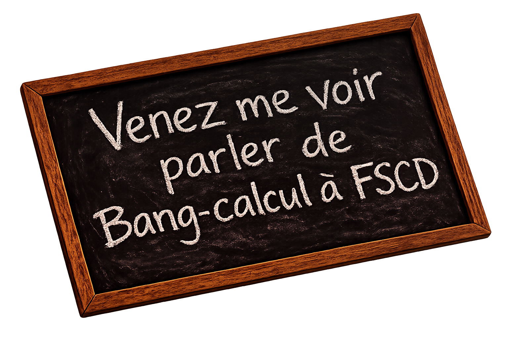

I have done a PhD in the Love team (now LoCal team) at the Laboratoire d'Informatique de Paris Nord of Université Sorbonne Paris Nord under the direction of G. Manzonetto. You can find it here: A Story of λ-calculus and Approximation.
You can also read my CV (in French)·
J’ai effectué une thèse au sein de l’équipe Love (désormais l’équipe LoCal) au Laboratoire d'Informatique de Paris Nord de l’Université Sorbonne Paris Nord sous la direction de G. Manzonetto. Vous pouvez la consulter ici : A Story of λ-calculus and Approximation.
Vous pouvez également lire mon CV·
You are welcome to contact me with any questions regarding my work, or if you would like me to give a talk — I would be very glad to do so.
Je vous invite à me contacter pour toute question relative à mon travail, ou si vous souhaitez m'inviter à donner un séminaire — j'en serais très heureux.

